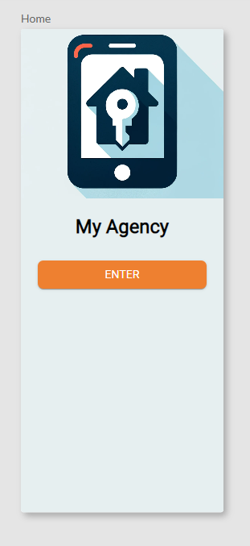

Documentation
Editeur de séquence d'écrans
Cet éditeur permet de relier les écrans de votre application mobile en fonction des interactions de l'utilisateur, telles que les clics sur les boutons et autres composants graphiques comme les listes. Vous apprendrez également à définir l'écran de démarrage de votre application.
Relier les écrans
Pour créer une navigation fluide dans votre application, suivez ces étapes :
Ajouter un composant interactif
Ajoutez un composant graphique (par exemple, un bouton Enter) à votre écran comme ci-dessous

Définir une transition d’écran
- Dans l’onglet Flow
- Sélectionnez le composant bouton
- Glissez la poignée de droite vers l'écran de destination
Défaire une transition d’écran
- Dans l’onglet Flow
- Sélectionnez le composant bouton
- Sélectionnez le lien
- Glissez l’extrémité du lien en dehors de l’écran
Définir l'écran de démarrage
Pour définir l'écran qui s'affiche au lancement de l'application :
- Retournez à l'éditeur de séquence d'écrans.
- Localisez l'écran que vous souhaitez définir comme écran de démarrage.
- Cliquez sur l'icône de la maison (Home) à gauche de cet écran.

Tester votre navigation
Il est important de tester la navigation de votre application pour s'assurer que tout fonctionne comme prévu.
- Utilisez le mode simulateur depuis l’onglet Simulation.
- Interagissez avec les écrans que vous avez configurés.
- Vérifiez si la navigation correspond à vos attentes.
Conseils et astuces
- Assurez vous que les transitions entre les écrans sont logiques et intuitives pour l'utilisateur.
- Utilisez des noms d'écrans clairs pour faciliter la configuration de la navigation.
- Testez régulièrement les modifications pour éviter les erreurs de navigation.